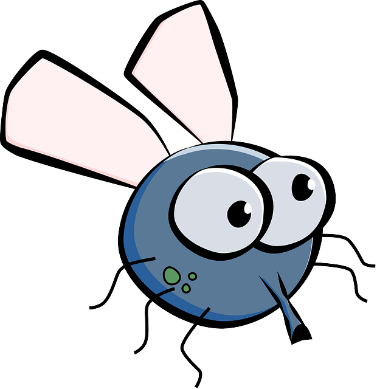

Los animales vertebrados son un grupo que tiene columna vertebral, formada por una serie de piezas articuladas o vértebras, que permiten algunos movimientos y les dan cierta flexibilidad. Su cuerpo está dividido en cabeza, tronco y extremidades. La reproducción de la mayoría de los vertebrados es sexual, es decir, se necesita del apareamiento de un macho y una hembra para dar origen a un nuevo individuo. En el grupo de animales vertebrados existen muy pocas especies con reproducción asexual y se presenta en algunos reptiles, anfibios e incluso algunas aves muy extrañas.[1]
Los animales vertebrados se clasifican en cinco grupos:
Toca Haz clic en cada imagen para ampliar la información.
Mamíferos
- Tienen el cuerpo cubierto de pelos.
- Los mamíferos acuáticos tienen piel lisa.
- Alimentan a sus crías con leche.
- Respiran a través de pulmones.
Características: cuerpo cubierto de pelo, respiración pulmonar, se desplazan por la tierra y la reproducción es vivípara. A este grupo pertenece el único mamífero volador que es el murciélago. También hace parte de los mamíferos el ser humano. Su hábitat es la tierra.
Ejemplos de mamíferos:
- Ballena
- Caballo
- Murciélago
- Delfín
- Perro
Aves
- Tienen el cuerpo cubierto de plumas.
- Poseen dos patas y dos alas.
- La mayoría de las aves vuelan, pero también hay otras que nadan, caminan y corren.
- Respiran por pulmones.
Características: cuerpo cubierto de plumas, respiración pulmonar, se desplazan por el aire, reproducción ovípara, sus extremidades son alas y patas. Su hábitat es la tierra.
Ejemplos de aves:
- Loro
- Avestruz
- Pingüino
- Cóndor
- Águila
Peces
- Tienen el cuerpo cubierto de escamas.
- Tienen aletas con las cuales puede nadar.
- Respiran por branquias.
- Pueden vivir en agua dulce o salada.
Características: cuerpo con escamas, lisos o con concha; respiración bronquial; se desplazan nadando; reproducción ovípara; fecundación externa en la mayoría; sus extremidades son las aletas y su hábitat es el agua.
En esta especie existe un escaso grupo de animales con reproducción vivíparo, como el caso de algunos tiburones y ovovivíparos como es el caso de la mantarraya o el tiburón blanco.
Ejemplos de peces:
- Salmón
- Tiburón
- Pez espada
- Anguila
- Atún
- Trucha
- Bagre
Anfibios
- Tienen el cuerpo cubierto por una piel húmeda, por lo que necesita vivir cerca de agua.
- Tienen patas musculosas que les permite saltar o nadar.
Características: cuerpo húmedo, respiración pulmonar, se desplazan nadando o saltando, sus extremidades son patas, su hábitat es la tierra y el agua, la fecundación es externa —a excepción de algunas pocas especies de salamandras que tienen fertilización interna—. La reproducción es ovípara.
Ejemplos de anfibios:
- Sapo
- Rana
- Salamandra
- Gallipato
- Tritón
Reptiles
- Tiene el cuerpo cubierto por una escama dura y áspera.
- Hay reptiles con caparazón.
- Poseen patas cortas y algunos no tienen patas.
Características: cuerpo escamoso; respiración pulmonar; se desplazan, reptan o caminan; sus extremidades son patas o sin ellas; su hábitat es la tierra y el agua; reproducción ovípara con fertilización interna. En el grupo de los reptiles existen unos pocos animales con reproducción ovovivíparos, es decir, se desarrollan dentro del vientre de la mamá hasta el momento del nacimiento, son ejemplo de este grupo la boa constrictora, la anaconda y el camaleón.
Ejemplos de reptiles:
- Cocodrilo
- Tortuga
- Serpiente
- Lagartija
- Iguana
Video: Animales vertebrados
Duración: 5 intentos
Enunciado: los animales ovovivíparos son aquellos que se desarrollan y crecen dentro de un huevo que la madre mantiene dentro de su cuerpo y cuida hasta que eclosiona como pasa con el camaleón o la mantarraya. En este enlace encontrarás una serie de actividades donde podrás poner a prueba tus conocimientos.
Objetivo de aprendizaje: reconocer los grupos de animales y sus características.
Enunciado: elige las respuestas correctas para cada ejercicio.
Selecciona el o los animales mamíferos.
Selecciona el o los animales vertebrados.
- 
Selecciona el o los animales vivíparos.
Selecciona el o los animales ovíparos.


Objetivo de aprendizaje: reconocer las características de los animales vertebrados.
Enunciado: identifica a qué grupo de animales pertenecen las características presentadas. Selecciona una de las dos opciones.
| Características | Opciones |
|---|---|
| Pelo, pulmonar, vivípara, tierra. | |
| Escamas, aletas, ovíparo, nadan. | |
| Patas o sin ellas, agua o tierra, pulmonar, ovíparo. | |
| Ovípara, aire, plumas, alas y patas. | |
| Saltan o nadan, tierra o agua, piel húmeda, nacen de huevo. |
Objetivo de aprendizaje: reconocer los animales vertebrados.
Enunciado: arrastra al grupo de los vertebrados aquellos animales que lo componen.
Vertebrados


Video: Animales vertebrados para niños - mamíferos, aves, reptiles, peces y anfibios
Duración: 8:47
Enunciado: observa este video en compañía de un familiar y crea en tu cuaderno una fábula donde los personajes sean los animales que conforman el grupo de los vertebrados.